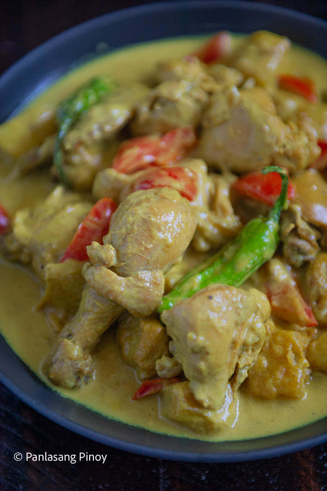

Filipino-Style Chicken Curry

Ingredients
- 2 lbs. chicken
- 1 tablespoon curry powder
- 1 piece potato cubed
- 4 cloves garlic minced
- 2 stalks celery sliced
- 1 piece red bell pepper sliced
- 2 pieces long green pepper
- 1 piece onion chopped
- 2 thumbs ginger cut into strips
- 2 cups coconut milk
- 1/2 cup all-purpose cream
- 1 cup water
- fish sauce and ground black pepper to taste
Instructions
- Heat oil in a pan. Fry potato for 1 minute per side. Remove from the pan. Set aside.
- Using the remaining oil, saute garlic, onion, celery, and ginger until onion softens.
- Add the chicken pieces. Saute until the outer part of the chicken turns light brown.
- Add 1 tablespoon fish sauce. Continue sautéing for 1 minute.
- Pour-in coconut milk and water. Let boil.
- Add curry powder. Stir until the powder is completely diluted. Cover the pot and continue cooking between low to medium heat until the liquid reduces to half.
- Add the red bell pepper and pan fried-potato. Cook for 5 minutes.
- Season with fish sauce and ground black pepper as needed. You can also add all-purpose cream if desired.
- Transfer to a serving bowl. Serve and enjoy!